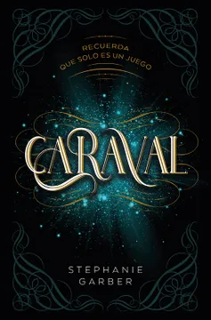
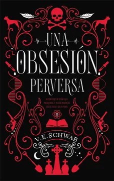

La tercer recomendación es para los que le gusta no solo el romance slow burn, sino también la Fantasía.
Por lo tanto, elegí "Caraval" de Stephanie Garber. Cabe aclarar que es una saga de tres libros: Caraval, Legendary y Finale. Aquí les dejo su SINOPSIS

Uno de mis géneros favoritos es la fantasía urbana, y yo creo que es para las personas que no suelen leer romance porque este libro no tiene nada de aquello. Simplemente son de ficción, con su toque paranormal y de misterio
Elegí un libro de la autora que nunca les va a fallar en este tipo de géner: "Una Obsesión Perversa" de V. E. Schwab
Este es el primer libro de una bilogía, luego tenemos "Una venganza mortal", pero está en cada uno si quieren leerlo o no.
Aquí les dejo la SINOPSIS
